Vient de Smalltalk, d'après les travaux menés à Xerox dans les années 1970 au Palo Alto Research Center (PARC).
MVC est est défini comme un assemblage de patterns, au minimum Observer et Strategy, souvent Composite, parfois Adapter.
MVC sans patterns
MVC désigne aussi une manière de structurer le code dans une application client-serveur.Dans beaucoup d'applications web, le MVC est utilisé sans pattern observateur,
en utilisant un pattern supplémentaire : le front controller. 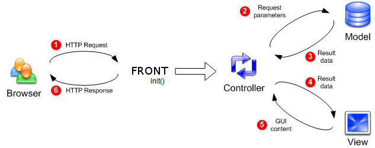 Exemple d'une application web en php :
appli/
├── control/
├── init/
├── model/
├── view/
└── www/
└── index.php
-
index.php est le front controller : toutes les requêtes y sont redirigées.
index.php supervise les initialisations (dossierinit/dans l'exemple).- Restauration de l'état de l'application (par ex à partir de la session).
- Contrôles de sécurité
- Routing : analyse l'url demandée et détermine le contrôleur à exécuter.
-
Le contrôleur a pour rôle de faire le lien entre les différentes parties.
En fonction du contexte calculé par le front controller, le contrôleur appelle le modèle pour récupérer l'information nécessaire.
Le contrôleur prépare ensuite les structures de données qu'il va transmettre à la vue.
Enfin, le contrôleur appelle la vue. -
La vue fabrique la réponse à partir des données transmises par le contrôleur.
Elle ne contient qu'une logique d'affichage, aucune intelligence applicative.
Intérêts
Séparation des tâches
Permet de répartir le travail de manière cohérente. Par exemple, les vues peuvent être écrites par des designers, le modèle et les contrôleurs par des développeurs backend.API distante
La séparation complète entre le modèle et les parties vue / contrôleur permet d'isoler le modèle derrière une API distante.
Exemple de Mastodon (réseau social décentralisé) :
le modèle est écrit en ruby,
accessible par une API http qui renvoie des objets en json.
Vues et contrôleurs sont gérés en javascript avec React.
MVC = assemblage de patterns
GOF p 14 :
MVC consists of three kinds of objects.
The Model is the application object,
the View is its screen presentation,
and the Controller defines the way the user interface reacts to user input.
Before MVC, user interface designs tended to lump these objects together.
MVC decouples them to increase flexibility and reuse.
MVC decouples views and models by establishing a subscribe/notify protocol between
them. A view must ensure that its appearance reflects the state of the model.
Whenever the model's data changes, the model notifies views that depend on it.
In response, each view gets an opportunity to update itself. This approach lets
you attach multiple views to a model to provide different presentations. You can
also create new views for a model without rewriting it.
Exemple de Head First
Cette partie est largement inspirée du chapitre 12 de "Design Patterns Head First" (p 526 de la version papier).
L'exemple utilisé est celui d'un logiciel pour écouter de la musique, un player.
L'interface permet d'ajouter des nouvelles chansons, de gérer des playlists et de renommer des morceaux.
Le player gère une petite base de données avec les morceaux et leurs données associées.
Il s'occupe aussi de jouer la musique, l'interface est constamment mise à jour avec le titre de la chanson courante, le temps écoulé etc.
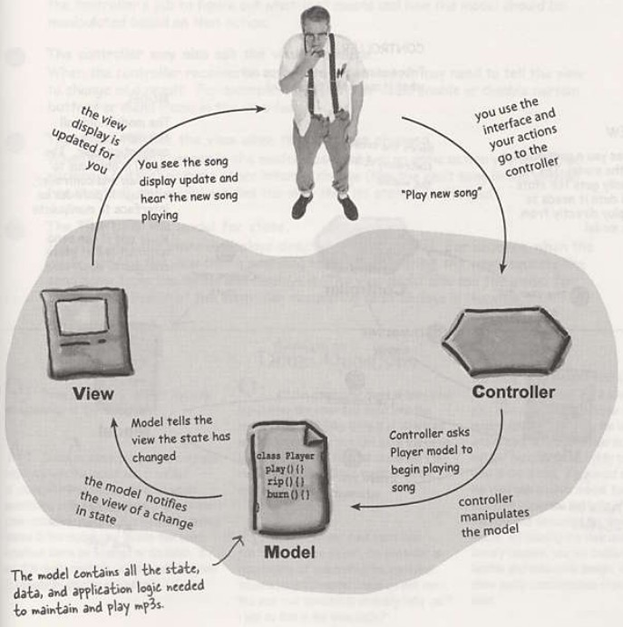
Un premier regard
Plus généralement, les interactions suivent ce schéma :
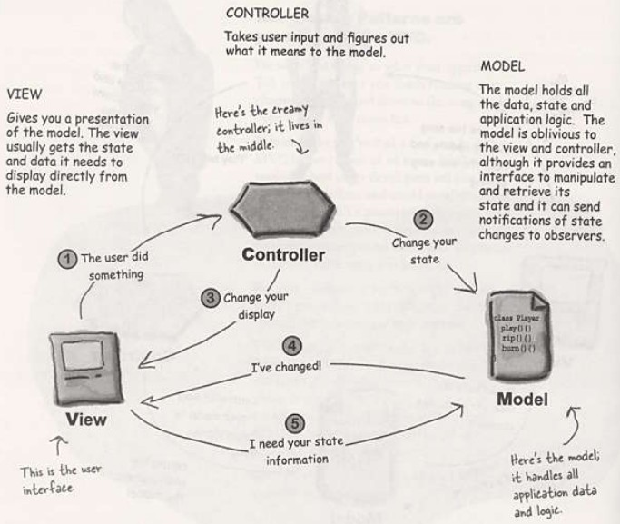
-
Nous, utilisateurs, interagissons avec la vue.
La vue est notre fenêtre vers le modèle.
La vue dit au contrôleur ce qu'on a fait, c'est au contrôleur de se débrouiller avec ça.
-
Le contrôleur demande au modèle de changer son état.
Le travail du contrôleur est d'interpréter nos actions et de déduire comment manipuler le modèle suite à cette action.
-
Le contrôleur peut aussi demander à la vue de changer.
Lorsque le contrôleur reçoit une action de la vue, il peut demander en retour à la vue de se mettre à jour.
Par exemple activer ou désactiver des boutons ou des menus.
-
Le modèle notifie la vue lorsque son état a changé.
Lorsque quelque chose change dans le modèle,
- soit suite à une de nos actions (comme cliquer sur un bouton)
- soit suite à un changement interne (une nouvelle chanson commence),
le modèle informe la vue que son état a changé.
-
La vue demande au modèle son état.
La vue récupère l'état qu'elle affiche directement depuis le modèle.
Par exemple, lorsque le modèle notifie la vue qu'une nouvelle chanson a commencé, la vue demande le nom de la chanson et l'affiche.
La vue peut aussi demander des infos au modèle lorsque le contrôleur lui demande de se mettre à jour.
Le controleur est-il observateur du modèle ?
Oui, dans certains designs, le contrôleur s'enregistre auprès du modèle et est informé de ses changements.
Par exemple, si certains changements d'état du modèle entraînent des modifications dans l'interface,
c'est vraiment le travail du contrôleur de demander à la vue de se mettre à jour.
Tout ce que le contrôleur fait, c'est de récupérer depuis la vue les actions de l'utilisateur et de les transmettre au modèle.
Alors pourquoi ne pas directement piloter le modèle depuis la vue ?
Déjà, le contrôleur ne fait pas que "récupérer les actions de l'utilisateur et de les transmettre au modèle", il interprête les actions de l'utilisateur et les transmet au modèle. Pour cela, il doit connaître la logique du modèle
On pourrait effectivement mettre ce code dans la vue, mais on a deux bonnes raisons de ne pas le faire :
- Déjà, on compliquerait le code de la vue en lui donnant 2 responsabilités : gérer l'interface et gérer la logique du modèle pour le piloter.
- On couplerait la vue au modèle ; impossible par exemple de réutiliser la même vue avec un autre modèle.
Le contrôleur sépare la logique du modèle de la vue, permet de découpler la vue du modèle.
=> plus souple, plus extensible, plus facile de d'adapter à des évolutions.
Schéma d'Oracle :
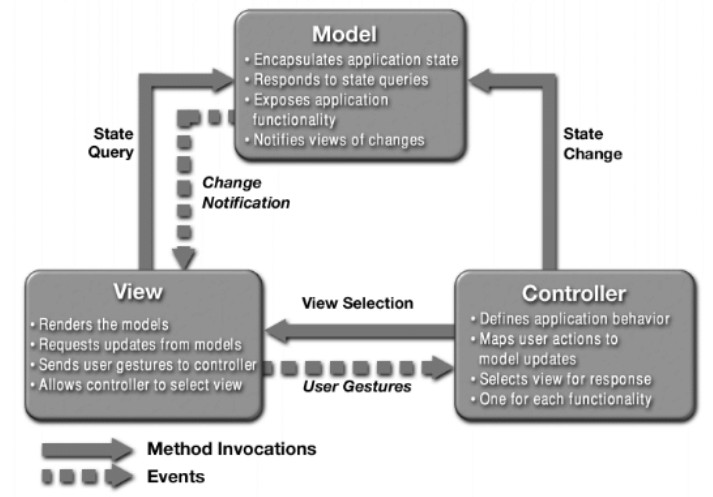
Le MVC sous l'angle des patterns
MVC met en général en jeu Observer, Strategy et Composite.
Adapter peut aussi être utilisé (voir plus loin).
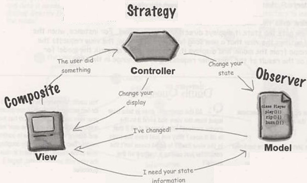
-
Le modèle utilise le pattern Observer pour tenir informés vues et contrôleurs de ses changements.
Ça permet de laisser le modèle complètement indépendant des vues et contrôleurs.
Permet par exemple d'avoir plusieurs vues à la fois.
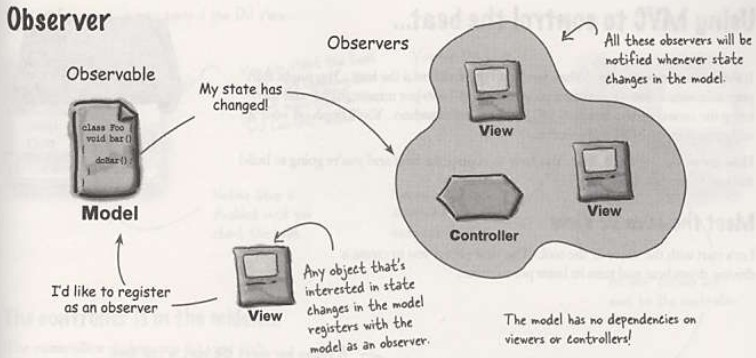
-
Vue et contrôleur utilisent le pattern Strategy.
La vue est un objet qui est configuré avec une stratégie, le contrôleur fournit cette stratégie.
La vue est uniquement concernée par l'affichage graphique, elle délègue au contrôleur toute décision concernant le comportement de l'interface.
L'utilisation d'une stratégie découple la vue du modèle car c'est le contrôleur qui est chargé d'interagir avec le modèle pour gérer les actions utilisateur. La vue n'a aucune idée de comment cela est fait.
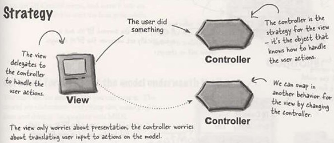
-
L'affichage est un emboîtement de composants graphiques (textes, labels, boutons panels...).
Chaque composant graphique est soit composite (une fenêtre) soit terminal (un bouton).
Lorsque le contrôleur dit à la vue de se mettre à jour, elle le dit au composant racine, et le pattern Composite fait le reste.
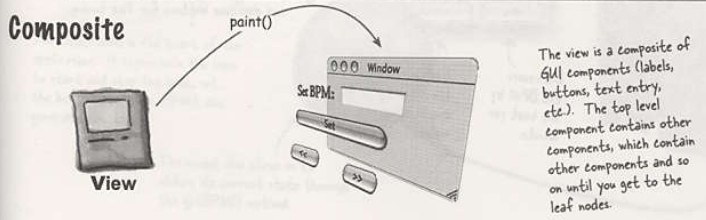
Examen du code
Code situé dans exemples/patterns/mvc/djview/
L'exemple contient deux points d'entrée : MainDJ et MainHeart.
public class MainDJ {
public static void main (String[] args) {
BeatModelInterface model = new BeatModel();
ControllerInterface controller = new BeatController(model);
}
}
public class MainHeart {
public static void main (String[] args) {
HeartModelInterface model = new HeartModel();
ControllerInterface controller = new HeartController(model);
}
}
Dans les deux cas, la séquence est la même :
- Création d'un modèle
- Création d'un contrôleur en lui passant le modèle.
- Le contrôleur crée la vue en lui passant le modèle et le contrôleur.
Model
Le modèle expose ses fonctionnalités à travers une interface.
On voit qu'il y a 2 types d'observateurs sur le modèle.
public interface BeatModelInterface {
void initialize();
// model manipulation
void on();
void off();
void setBPM(int bpm);
int getBPM();
// observer methods
void registerObserver(BeatObserver o);
void removeObserver(BeatObserver o);
void registerObserver(BPMObserver o);
void removeObserver(BPMObserver o);
}
Points intéressants de l'implémentation :
public class BeatModel implements BeatModelInterface, MetaEventListener {
// ...
ArrayList<BeatObserver> beatObservers = new ArrayList<BeatObserver>();
ArrayList<BPMObserver> bpmObservers = new ArrayList<BPMObserver>();
// ...
public void setBPM(int bpm) {
this.bpm = bpm;
sequencer.setTempoInBPM(getBPM());
notifyBPMObservers();
}
// ...
void beatEvent() {
notifyBeatObservers();
}
// ...
}
Le modèle est complètement décorrélé de la vue grâce à l'utilisation de Observer.
On implémente une vue qui permet d'afficher les BPM, mais on pourrait implémenter d'autres vues utilisant exactement le même modèle, par ex :
- Un light-show basé sur les battements du modèle.
- Une vue textuelle qui affiche le genre de musique suivant la valeur du BPM.
Remarquer qu'ici, le véritable travail est effectué par le javax.sound.midi.Sequencer ; le model est lui-même observateur du séquencer (voir méthodes setUpMidi() et meta()). Il ne fait qu'intégrer ces capacités à l'application, mais cela ne change rien pour les vues et les contrôleurs, qui s'appuient sur le modèle pour obtenir l'inteligence métier.
View
La classe DJView contient le code pour créer la vue, répartie sur 2 fenêtres.
La vue est observatrice du modèle.
public class DJView implements ActionListener, BeatObserver, BPMObserver {
// ...
BeatModelInterface model;
ControllerInterface controller;
// ...
public DJView(ControllerInterface controller, BeatModelInterface model) {
this.controller = controller;
this.model = model;
model.registerObserver((BeatObserver)this);
model.registerObserver((BPMObserver)this);
}
// ...
public void createView() { ... } // swing pour la fenêtre 1
public void createControls() { ... } // swing pour la fenêtre 2
// ...
// Toutes les actions sont transmises au contrôleur
public void actionPerformed(ActionEvent event) {
if (event.getSource() == setBPMButton) {
int bpm = Integer.parseInt(bpmTextField.getText());
controller.setBPM(bpm);
} else if (event.getSource() == increaseBPMButton) {
controller.increaseBPM();
} else if (event.getSource() == decreaseBPMButton) {
controller.decreaseBPM();
}
}
// Implémentation de BPMObserver
public void updateBPM() {
if (model != null) {
int bpm = model.getBPM(); // demande directement au modèle
if (bpm == 0) {
if (bpmOutputLabel != null) {
bpmOutputLabel.setText("offline");
}
} else {
if (bpmOutputLabel != null) {
bpmOutputLabel.setText("Current BPM: " + bpm);
}
}
}
}
// Implémentation de BeatObserver
public void updateBeat() {
if (beatBar != null) {
beatBar.setValue(100);
}
}
}
Controller
Expose ses fonctionnalités via une interface :
public interface ControllerInterface {
void start();
void stop();
void increaseBPM();
void decreaseBPM();
void setBPM(int bpm);
}
Dans l'implémentation, remarquer que la vue est créée et initialisée dans le constructeur du contrôleur.
Voir aussi les méthodes utilisées par la vue, comme increaseBPM(), qui se traduisent en appel au modèle.
public class BeatController implements ControllerInterface {
BeatModelInterface model;
DJView view;
public BeatController(BeatModelInterface model) {
this.model = model;
view = new DJView(this, model);
view.createView();
view.createControls();
view.disableStopMenuItem();
view.enableStartMenuItem();
model.initialize();
}
public void start() {
model.on();
view.disableStartMenuItem();
view.enableStopMenuItem();
}
public void stop() {
model.off();
view.disableStopMenuItem();
view.enableStartMenuItem();
}
public void increaseBPM() {
int bpm = model.getBPM();
model.setBPM(bpm + 1);
}
public void decreaseBPM() {
int bpm = model.getBPM();
model.setBPM(bpm - 1);
}
public void setBPM(int bpm) {
model.setBPM(bpm);
}
}
Utilisation de Strategy
Le fait de définir ControllerInterface permet d'appliquer le pattern Strategy.
Rappel :
 Ici, la vue délègue ses interactions avec le modèle à une
Ici, la vue délègue ses interactions avec le modèle à une ControllerInterface, qui peut être implémentée de différentes façons.
Illustration : On nous fournit un autre modèle, HeartBeat, qui génère des battements de coeur, et on souhaite réutiliser notre vue pour le visualiser.
Ce modèle expose ses fonctionnalités par le biais d'une interface.
public interface HeartModelInterface {
int getHeartRate();
void registerObserver(BeatObserver o);
void removeObserver(BeatObserver o);
void registerObserver(BPMObserver o);
void removeObserver(BPMObserver o);
}
Par rapport à BeatModelInterface, getBPM() a été remplacée par getHeartRate(), et certaines fonctionnalités manquent :
off(), on(), setBPM().
Pour intégrer ce nouveau modèle au code existant, on peut écrire un Adapter.
public class HeartAdapter implements BeatModelInterface {
HeartModelInterface heart;
public HeartAdapter(HeartModelInterface heart) {
this.heart = heart;
}
public void initialize() {}
public void on() {}
public void off() {}
public int getBPM() { return heart.getHeartRate(); }
public void setBPM(int bpm) {}
public void registerObserver(BeatObserver o) { heart.registerObserver(o); }
public void removeObserver(BeatObserver o) { heart.removeObserver(o); }
public void registerObserver(BPMObserver o) { heart.registerObserver(o); }
public void removeObserver(BPMObserver o) { heart.removeObserver(o); }
}
On peut maintenant écrire un contrôleur adapté au nouveau modèle :
public class HeartController implements ControllerInterface {
HeartModelInterface model;
DJView view;
public HeartController(HeartModelInterface model) {
this.model = model;
view = new DJView(this, new HeartAdapter(model));
view.createView();
view.createControls();
view.disableStopMenuItem();
view.disableStartMenuItem();
}
public void start() {}
public void stop() {}
public void increaseBPM() {}
public void decreaseBPM() {}
public void setBPM(int bpm) {}
}
Avec exactement la même vue, on utilise un autre modèle.
La vue réagit différemment (on ne peut plus régler les battements ni les augmenter / diminuer, on ne peut plus faire start / stop) parceque c'est le contrôleur qui décide du comportement en utilisant sa connaissance du modèle.
La fonction main() est dans MainHeart.
C'est à cet endroit qu'on utilise la possibilité de paramétrer la vue par une stratégie.
public class MainHeart {
public static void main (String[] args) {
HeartModel model = new HeartModel();
ControllerInterface controller = new HeartController(model);
}
}
The Model is the application object,
the View is its screen presentation,
and the Controller defines the way the user interface reacts to user input.
Before MVC, user interface designs tended to lump these objects together.
MVC decouples them to increase flexibility and reuse.
MVC decouples views and models by establishing a subscribe/notify protocol between them. A view must ensure that its appearance reflects the state of the model. Whenever the model's data changes, the model notifies views that depend on it. In response, each view gets an opportunity to update itself. This approach lets you attach multiple views to a model to provide different presentations. You can also create new views for a model without rewriting it.
La vue est notre fenêtre vers le modèle.
La vue dit au contrôleur ce qu'on a fait, c'est au contrôleur de se débrouiller avec ça.
Le travail du contrôleur est d'interpréter nos actions et de déduire comment manipuler le modèle suite à cette action.
Lorsque le contrôleur reçoit une action de la vue, il peut demander en retour à la vue de se mettre à jour.
Par exemple activer ou désactiver des boutons ou des menus.
Lorsque quelque chose change dans le modèle,
- soit suite à une de nos actions (comme cliquer sur un bouton)
- soit suite à un changement interne (une nouvelle chanson commence),
le modèle informe la vue que son état a changé.
La vue récupère l'état qu'elle affiche directement depuis le modèle.
Par exemple, lorsque le modèle notifie la vue qu'une nouvelle chanson a commencé, la vue demande le nom de la chanson et l'affiche.
La vue peut aussi demander des infos au modèle lorsque le contrôleur lui demande de se mettre à jour.
Ça permet de laisser le modèle complètement indépendant des vues et contrôleurs.
Permet par exemple d'avoir plusieurs vues à la fois. 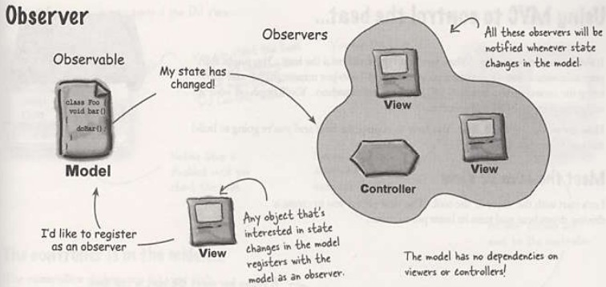
La vue est un objet qui est configuré avec une stratégie, le contrôleur fournit cette stratégie.
La vue est uniquement concernée par l'affichage graphique, elle délègue au contrôleur toute décision concernant le comportement de l'interface.
L'utilisation d'une stratégie découple la vue du modèle car c'est le contrôleur qui est chargé d'interagir avec le modèle pour gérer les actions utilisateur. La vue n'a aucune idée de comment cela est fait. 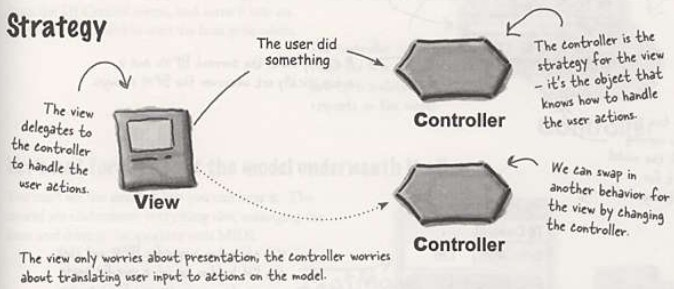
Chaque composant graphique est soit composite (une fenêtre) soit terminal (un bouton).
Lorsque le contrôleur dit à la vue de se mettre à jour, elle le dit au composant racine, et le pattern Composite fait le reste. 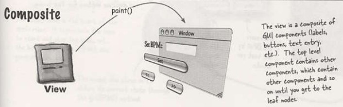